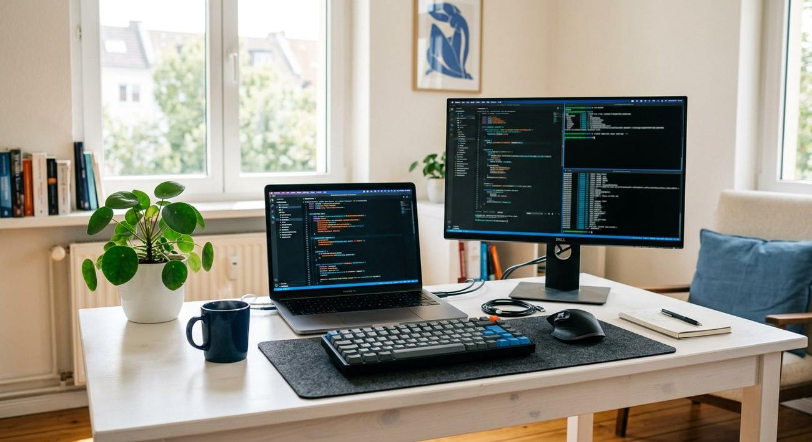
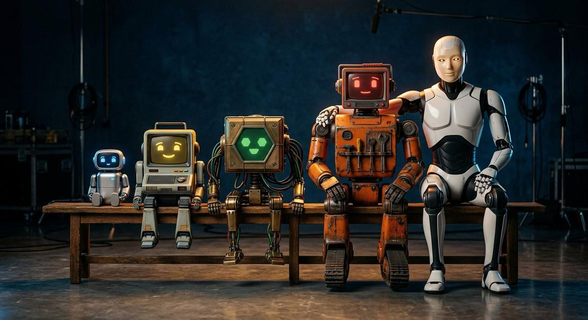
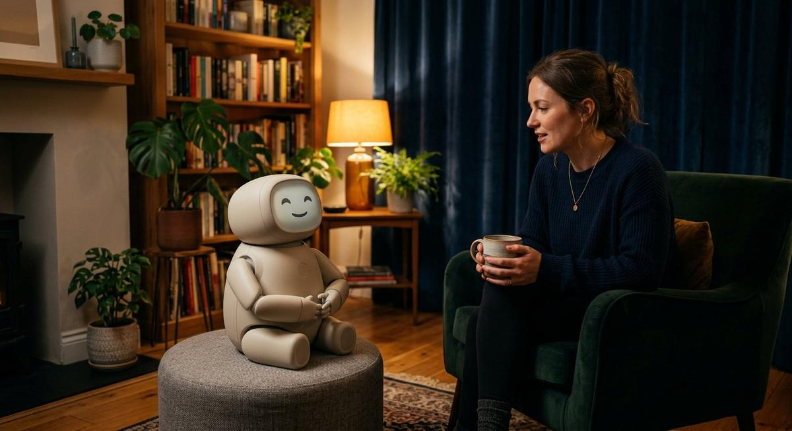
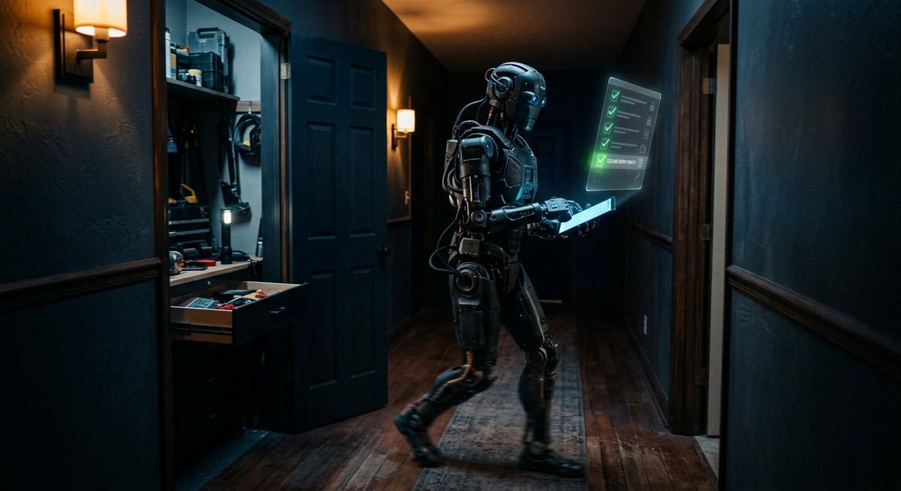
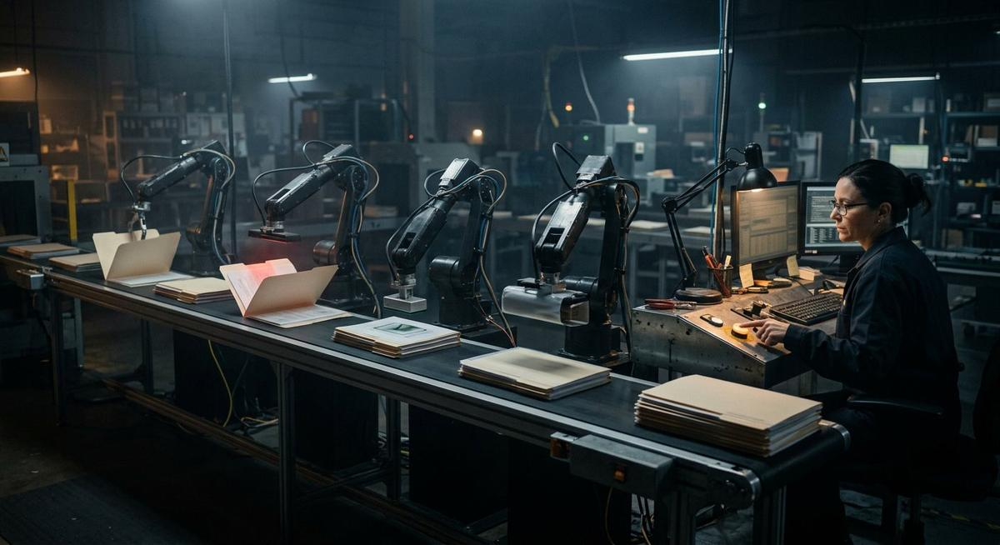
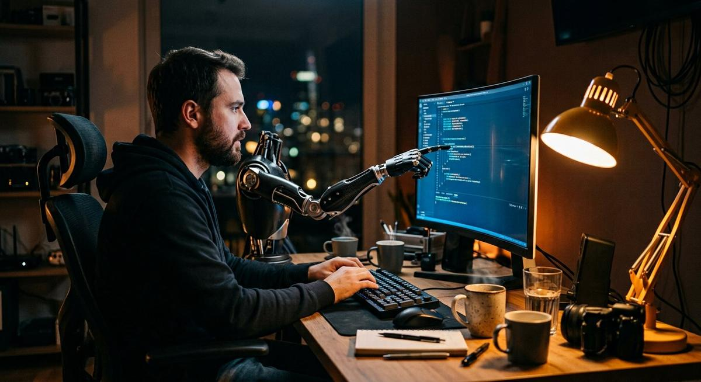
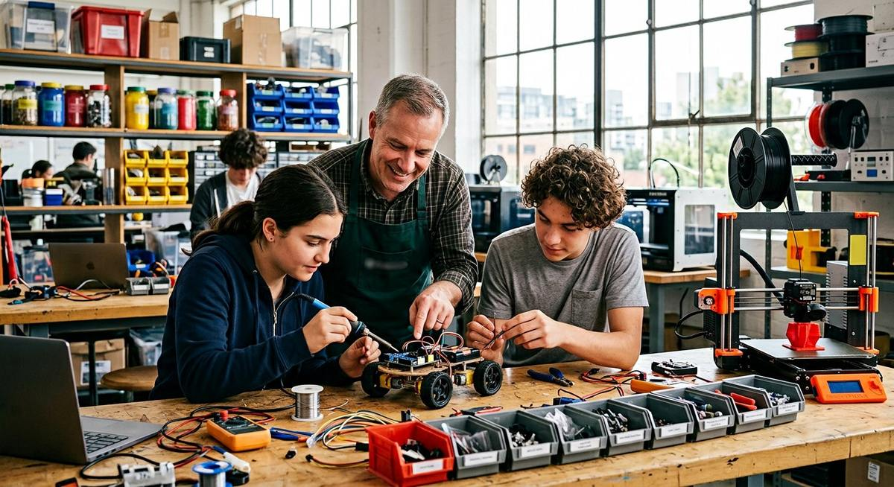
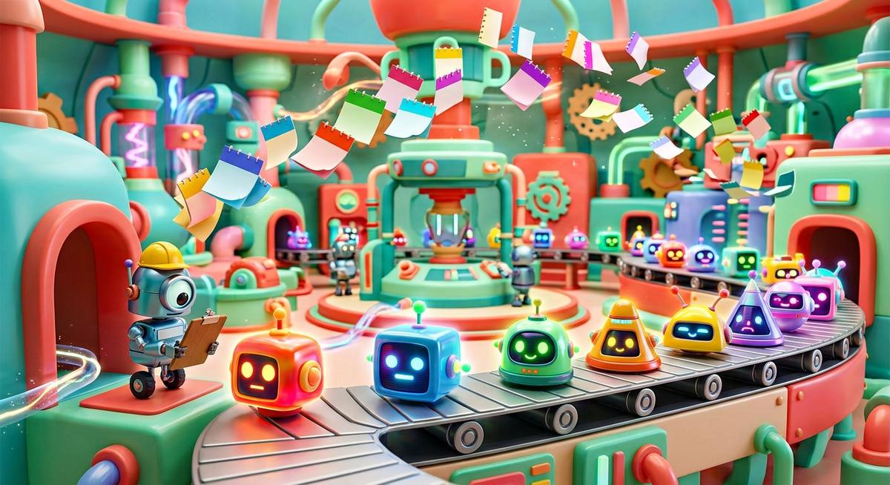

L'IA n'appartient pas qu'aux géants du cloud : des modèles open weights (Mistral, Qwen, Llama, DeepSeek…) se téléchargent, s'exécutent chez vous et se personnalisent librement. Autour d'eux, un écosystème d'outils extraordinaire émerge chaque mois. Voici notre carte du territoire — et nos propres contributions.

Un « LLM ouvert », c'est un modèle dont les poids sont téléchargeables : vous pouvez le faire tourner sur vos serveurs, l'adapter à votre vocabulaire métier, et personne ne voit vos données passer. Les familles qui comptent en 2026 :

| Modèle | Qui le développe | Sa force | Idéal pour… |
|---|---|---|---|
| Mistral | Mistral AI 🇫🇷 | La référence européenne : efficace, excellente compréhension du français | Les projets souverains « made in France », administrations, PME exigeantes |
| Qwen | Alibaba | Des tailles pour tous les besoins, du minuscule au géant ; plusieurs sous licence Apache 2.0 | Toute la gamme d'usages, du navigateur (notre démo !) au datacenter |
| Llama | Meta | L'écosystème le plus large : tutoriels, outils, dérivés par milliers | Expérimenter vite avec une communauté énorme |
| DeepSeek | DeepSeek | Raisonnement puissant pour un coût d'exécution très faible | Analyse, mathématiques, code — quand le budget compte |
| Gemma | Petits modèles très bien optimisés | Embarqué, robots, applications sur poste de travail |

Vous posez une question, il répond. Intelligent mais passif : il attend. C'est l'assistant conversationnel classique.

On lui donne un objectif, il agit : cherche, utilise des outils (recherche web, fichiers, bases de données), vérifie, corrige. Notre démo « chef d'équipe » en montre un.

Plusieurs agents spécialisés coordonnés par un superviseur, avec validation humaine. C'est le stade « usine » : des workflows entiers automatisés.
Frameworks open source que nous utilisons pour construire ces équipes : LangGraph (contrôle fin, production) et CrewAI (équipes par rôles, prototypage rapide), routés par LiteLLM et recherchant en privé via SearxNG.
Deux projets open source maintenus par le Hub et sa communauté GitHub : un assistant conversationnel souverain et un orchestrateur de tâches nocturnes. Modèles ouverts, données locales — évidemment.
🔍 Les dépôts : github.com/cim-montpellier · cimlattes · cimperols — contributions bienvenues !

Le développement logiciel a changé d'époque : des « agents de code » lisent, écrivent, testent et corrigent. Nous les utilisons au quotidien et formons à leur usage. La sélection qui compte :
L'éditeur le plus répandu, avec l'assistant intégré de GitHub. La porte d'entrée idéale.
Un éditeur pensé « IA d'abord » : l'agent et l'éditeur partagent le même fil de travail.
L'agentic IDE de Google : des agents qui pilotent éditeur, terminal et navigateur, gratuits pour les particuliers.
L'agent en ligne de commande d'Anthropic : réputé pour la qualité sur les refactors profonds.
Le champion de l'autonomie : des tâches longues menées sans supervision, CLI + cloud.
Des agents libres « apportez votre modèle » : branchez DeepSeek, Qwen ou Mistral locaux.
Les agents « délégation totale » qui travaillent en parallèle sur des machines virtuelles.
Les moteurs ouverts qui alimentent ces outils — y compris auto-hébergés pour la confidentialité.
Ollama est l'outil open source qui a popularisé les LLM locaux : il télécharge un modèle et vous parle ensuite sur votre machine, via une interface de commande ou une API locale. C'est le même principe que notre démo navigateur — en plus puissant, et sans limite de taille. Nos agents Hermes Agent et nos services RAG s'appuient sur ce type d'API locale.
Le club est né de la passion du matériel : circuits, robots, objets connectés. Aujourd'hui, les petits modèles d'IA ouverts (Gemma, Llama 1B…) font tourner de la reconnaissance vocale ou d'image directement sur un Raspberry Pi. Notre FabLab continue d'explorer : robots éducatifs, capteurs, domotique, imprimantes 3D.


GLM-5.3, DeepSeek V4 Pro, Gemini 3.7 Flash, Grok 4.6, Qwen3.8… le rythme s'est encore accéléré en août. On vous aide à trier ce qui compte vraiment pour votre usage.
Lire l'enquête →